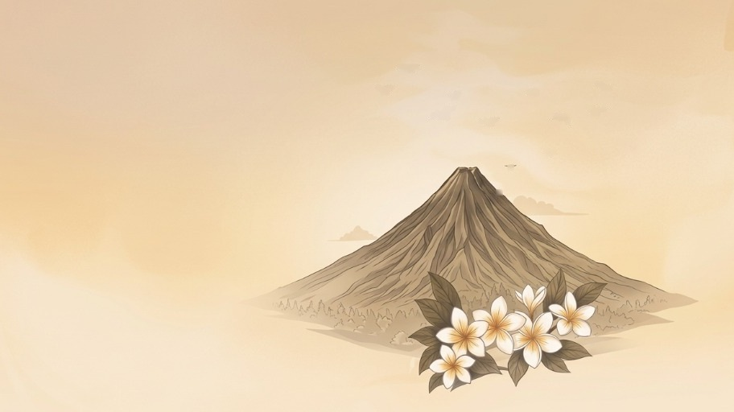
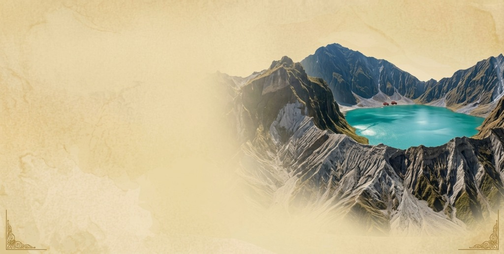
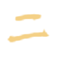

Preserve the Indigenous Kulitan Script
Rediscover the ancient Kapampangan script through interactive tracing drills, calligraphy studio, and syllable challenges.
The Kapampangan people possess their own distinct ancient writing system known as Kulitan or Sulat Kapampangan. It is one of the most structurally unique pre-colonial scripts in the Philippines.
Kulitan (also known as Súlat Kapampángan or Pamagkulit) is the pre-colonial indigenous writing system of the Kapampangan people. It is an abugida (alphasyllabary) traditionally composed vertically from top to bottom (Tínduk) in right-to-left columns. Syllables are formed through architectural stacking: an Indung Súlat (root consonant with an inherent /a/ sound) is paired with Ának Súlat (diacritical marks and codas) into compact, expressive syllabic characters.
Notice how each syllable is aligned vertically downward. The Indung Súlat (mother root consonant) serves as the foundation, while consonants and vowel markers stack (Sikami) into a single vertical block.
13 primary consonants with inherent /a/ sound. The core backbone of every syllable.
Diacritical marks (Gulis Babo & Gulis Lalam) that change vowels to /i, e/ or /u, o/.
Vertical stacking of the final consonant (coda) beneath the root letter.
Kasabihang Kapampangan sa Pagsulat (Cultural Proverb):
"Ing taung e mamye ulaga king kekang amanung sisuan, mekad e na balu ing tutu nang pigmulan."
Tagalog: (Ang taong hindi nagpapahalaga sa kanyang wikang sinuso ay baka hindi alam ang kanyang pinagmulan.)
English: (One who gives no honor to their mother tongue may not know their true origin.)
The five defining principles that distinguish Sulat Kapampangan from every other indigenous writing system in the Philippine archipelago.
Traditional Kulitan is read top-to-bottom, starting from top-right to bottom-left.
Unlike horizontal scripts like Baybayin or the Latin alphabet, Kulitan cascades downward in vertical columns (Tínduk). When writing multiple columns, lines advance from right to left—reflecting ancient inscriptions carved into bamboo slats and tree bark.
Kulitan is an abugida (alphasyllabary) script where every base character represents a consonant with an inherent vowel.
Each mother consonant (Indûng Sûlat) naturally carries the vowel sound /a/. To modify this sound to /i, e/ or /u, o/, diacritical marks known as Ának Sûlat (such as Gilit Babo or Gilit Lalam) are placed on the character without writing separate letters.
Characters, vowel modifiers, and consonant clusters stack directly onto root letters to form complete syllabic blocks.
Letters are never aligned side by side horizontally. Final consonants (coda) and affix characters attach directly below the mother letter (Indûng Sûlat), creating an elegant, compact vertical tower for each syllable. Special homorganic nasal pairings are formed using Sikami rules.
Kulitan was engineered specifically to fit the distinct linguistic roots and nasal sound pairings of the Kapampangan language.
The orthography of Kulitan is tailored exactly for Amánung Sísuan (the beloved mother tongue of Pampanga). It accurately accommodates native homorganic nasal pairings such as ng, mp, nt, and mb, along with glottal stops that Latin characters and other regional scripts fail to capture.
Local historians, cultural advocates, artists, and typography designers in Pampanga actively preserve Kulitan today through calligraphy, public installations, and digital fonts.
Kulitan is vibrant and alive! From municipal border arches across Angeles City and San Fernando to calligraphy exhibits, academic workshops, and modern interactive apps like eSUBLI, this sacred script is being proudly reclaimed by the next generation.


Use your mouse or touch display to draw and trace the root character KA (Indung Súlat) below.
Experience the complete power of eSUBLI: Pamana sa Sulat on your Android device. Complete offline mode for classroom learning, interactive trace haptics, and instant verification drills.
Download the package file (~24.5 MB) directly to your device and install quickly without complicated steps.
Install securely from the Google Play Store for automatic background updates and certified security checks.